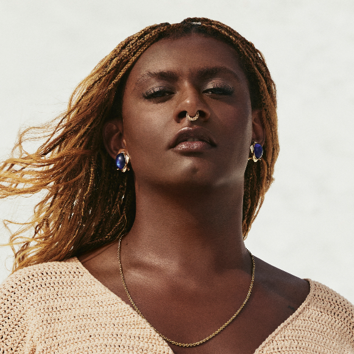
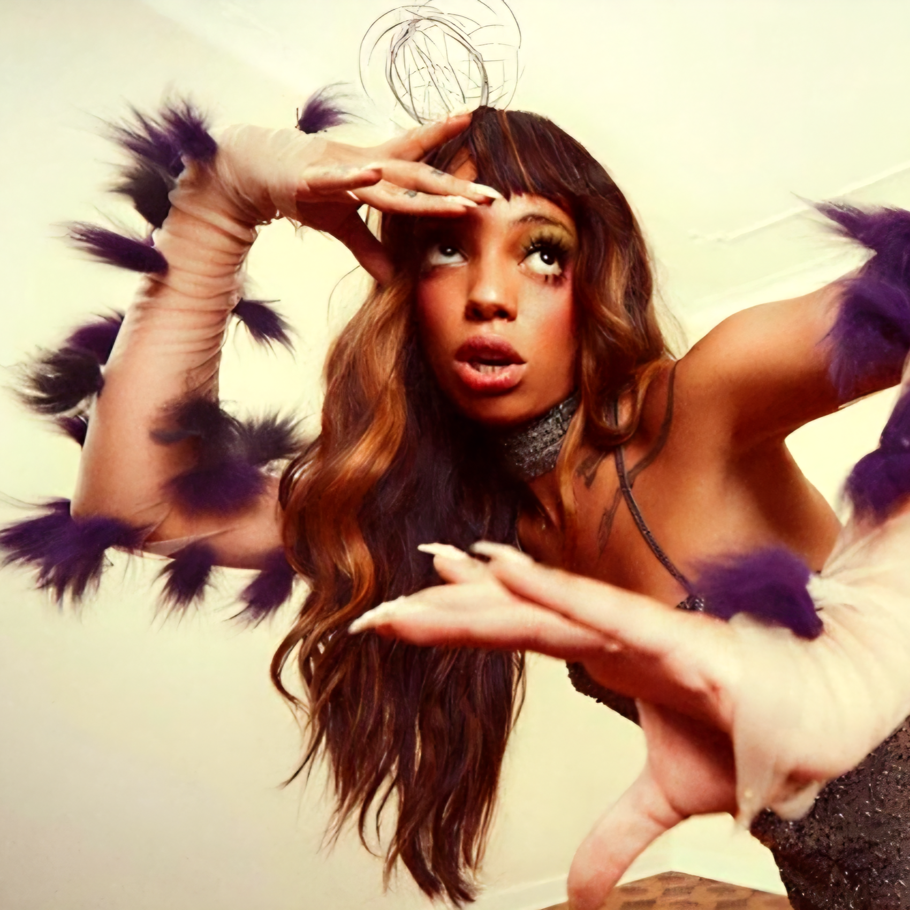
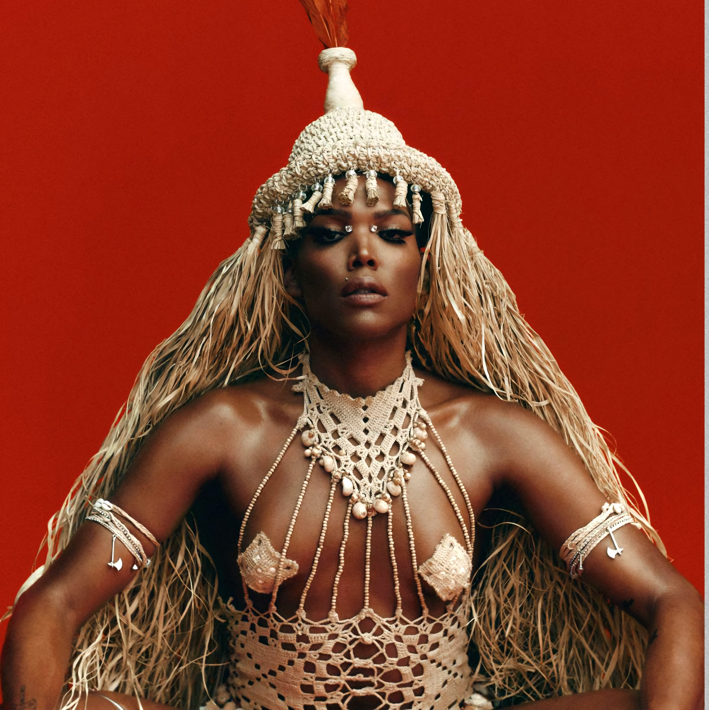

MÊS DO ORGULHO
a diversidade é o futuro.
TRANSPOLITIZARTES

LINIKER
Natural de Araraquara (SP), Liniker é uma força da natureza na música preta brasileira. Ela estourou em 2015 com o projeto Liniker e os Caramelows e o EP Cru, arrebatando o público com sua voz black, moldada pelo soul e pelo R&B. Em sua carreira solo, consolidou-se como uma das maiores compositoras de sua geração.

URIAS
(1941-2025)
Nascida em Uberlândia (MG), Urias começou sua trajetória na moda e na direção criativa antes de canalizar sua visão estética afiada para a música. O impacto veio com o single Diaba (2019), um manifesto sonoro e visual focado em peitar o preconceito com arte, alta costura e batidas eletrônicas pesadas.

MAJUR
Vinda de Salvador (BA), Majur traz em seu canto o calor, o axé e a complexidade da música soteropolitana. Ela chamou a atenção do país em 2019 ao dividir os vocais com Elza Soares e Emicida no hino AmarElo. Dona de uma extensão vocal impressionante e de um timbre único, sua música mistura a MPB clássica, o pop e as matrizes africanas.